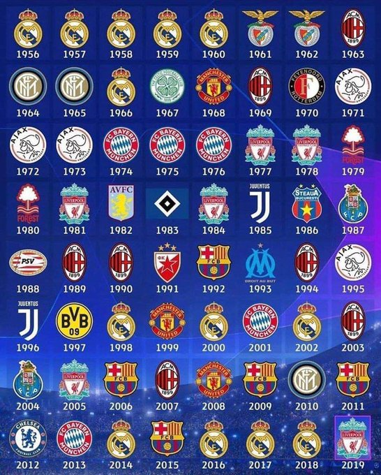

|  |
Lista de quantos titulos tem cada campeão.
Real Madrid: 14 (1956, 1957, 1958, 1959, 1960, 1966, 1998, 2000,
2002, 2014, 2016, 2017, 2018 e 2022)
Milan: 7 (1963, 1969, 1989, 1990, 1994, 2003 e 2007)
Bayern de Munique: 6 (1974, 1975, 1976, 2001, 2013 e 2020)
Liverpool: 6 (1977, 1978, 1981, 1984, 2005 e 2019)
Barcelona: 5 (1992, 2006, 2009, 2011 e 2015)
Ajax: 4 (1971, 1972, 1973 e 1995)
Inter de Milão: 3 (1964, 1965 e 2010)
Manchester United: 3 (1968, 1999 e 2008)
Juventus: 2 (1985 e 1996)
Benfica: 2 (1961 e 1962)
Chelsea: 2 (2012 e 2021)
Nottingham Forest: 2 (1979 e 1980)
Porto: 2 (1987 e 2004)
Borussia Dortmund: 1 (1997)
Celtic: 1 (1967)
Manchester City: 1 (2023)
Hamburgo: 1 (1983)
Steaua Bucareste: 1 (1986)
Olympique de Marselha: 1 (1993)
Feyenoord: 1 (1970)
PSV: 1 (1988)
Aston Villa: 1 (1982)
Estrela Vermelha: 1 (1991)
|